W 2010 roku, nasza przygoda z Japonią rozpoczęła się od pierwszej podróży do tego fascynującego kraju. To był
moment, który na zawsze zmienił nasze życie i przyniósł fascynację japońską kulturą, historią i pięknem
przyrody. Nasza pasja do Japonii była tak wielka, że postanowiliśmy ją podzielić z innymi.
Od tego czasu nasza strona stała się jednym z wiodących źródeł informacji o podróżach do Japonii.
Osiągnęliśmy wiele wspaniałych rzeczy na naszej drodze:
- Wpisaliśmy się na listę najlepszych blogów podróżniczych poświęconych Japonii.
- Otrzymaliśmy wiele pozytywnych recenzji od podróżników, którzy skorzystali z naszych porad.
- Nasza społeczność stała się miejscem, gdzie inni miłośnicy Japonii mogą dzielić się swoimi historiami i
doświadczeniami.
- Zorganizowaliśmy liczne konkursy i wydarzenia promujące Japonię jako destynację podróży.
- Współpracowaliśmy z lokalnymi ekspertami, aby dostarczyć najbardziej wiarygodne informacje.
Naszą misją jest nadal dostarczanie wartościowych informacji i inspiracji wszystkim, którzy marzą o podróży
do Japonii. Mamy wiele planów na przyszłość, w tym rozwijanie treści, organizowanie wydarzeń i tworzenie
jeszcze lepszych narzędzi dla podróżników.
Chcielibyśmy podziękować naszej społeczności za wsparcie i za to, że jesteście częścią naszej podróży. Wasza
pasja do Japonii jest naszą główną motywacją, i jesteśmy wdzięczni, że możemy być częścią tego niesamowitego
świata.

 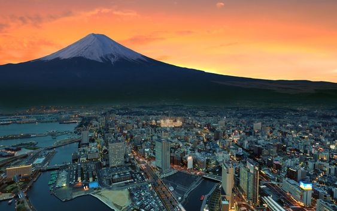
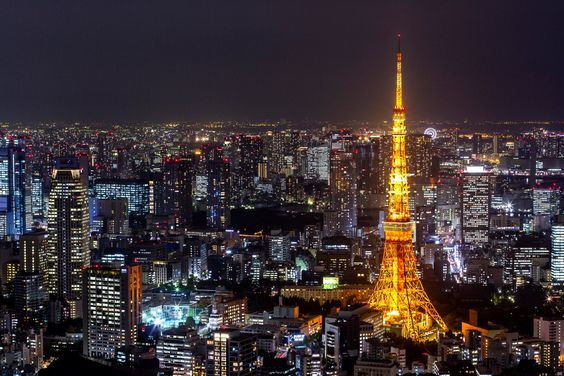
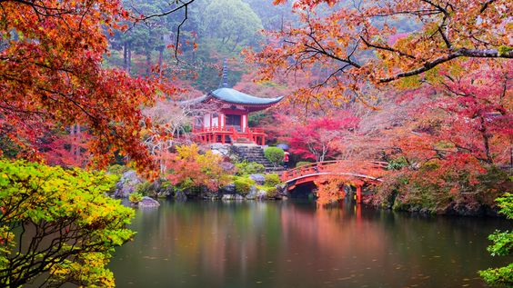
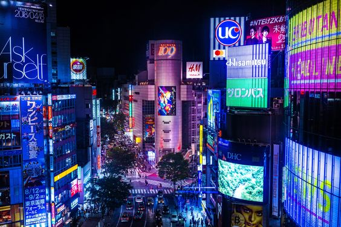
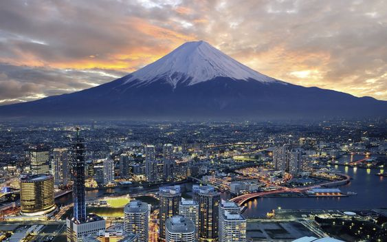
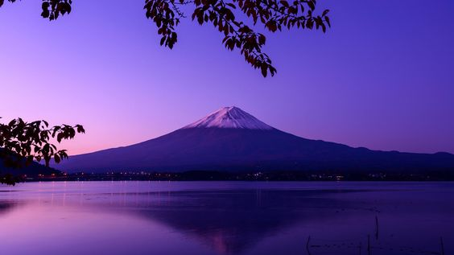
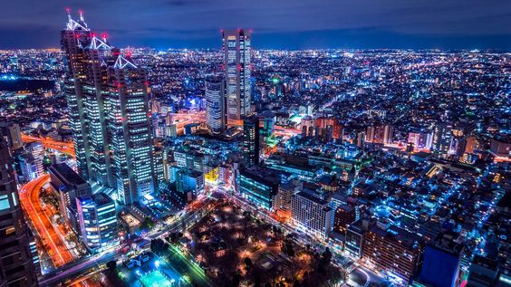
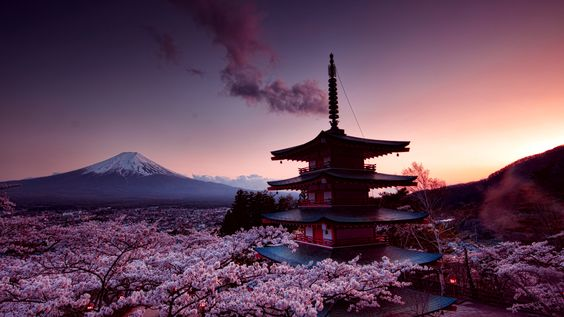
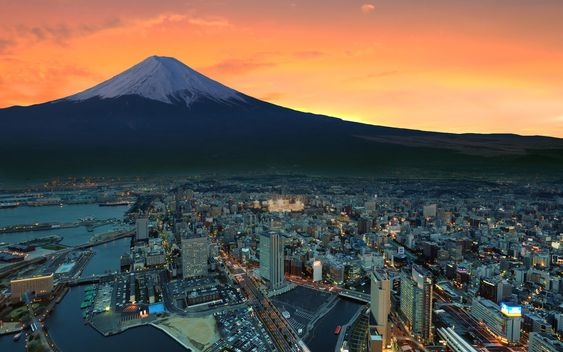
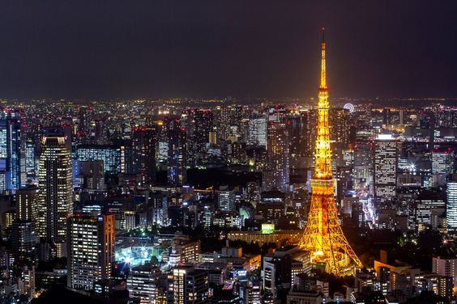
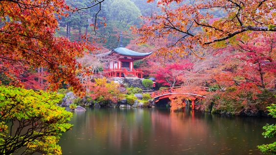
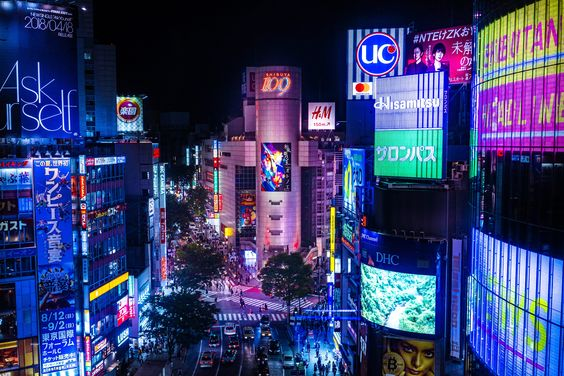
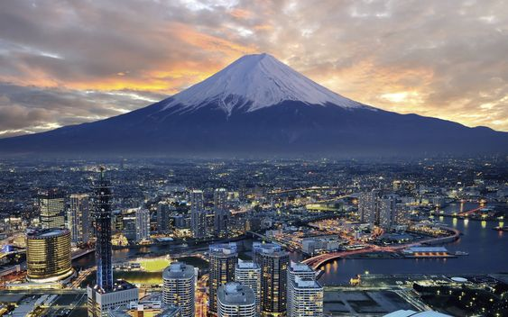
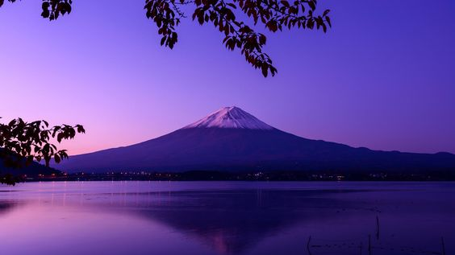
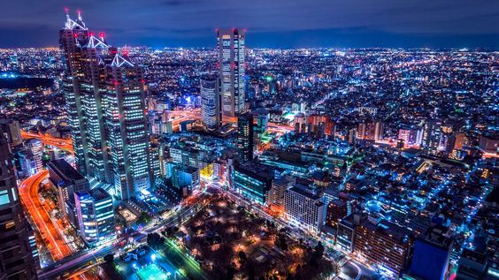
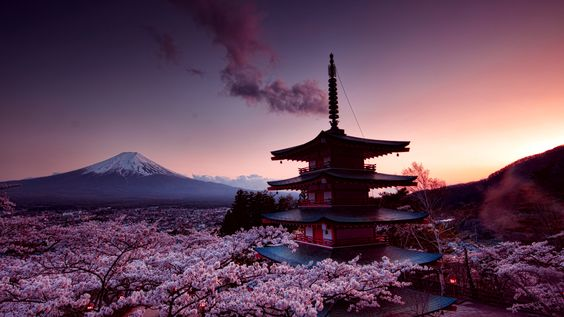